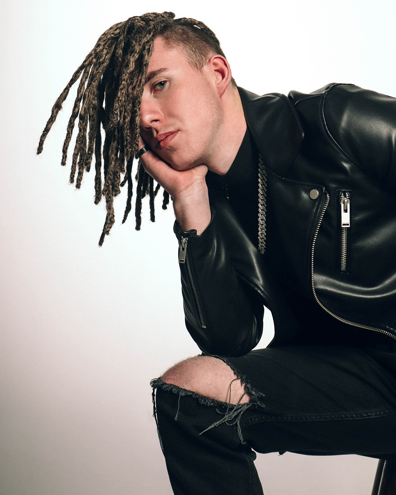
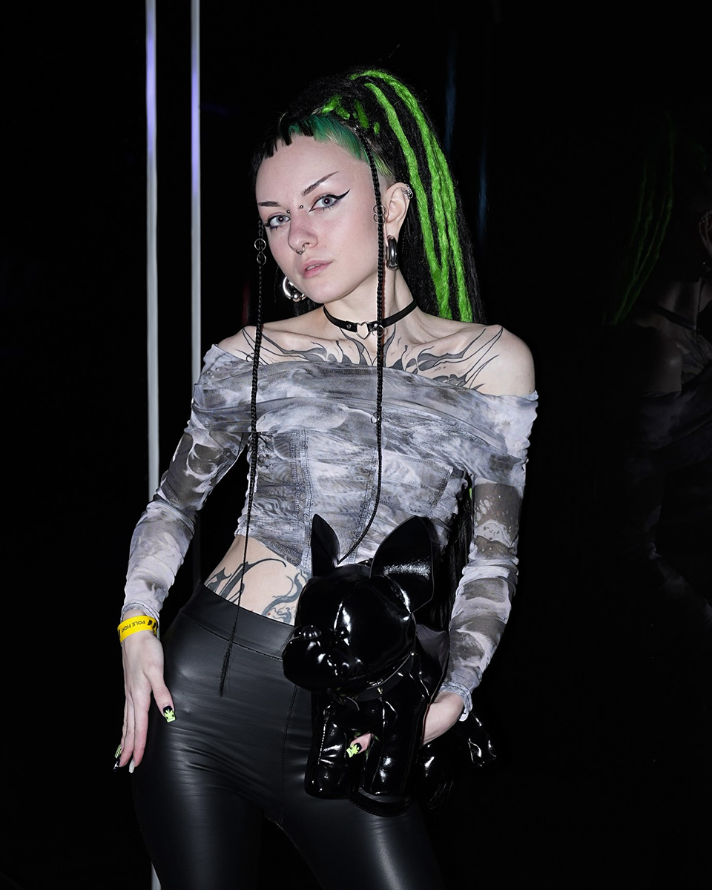
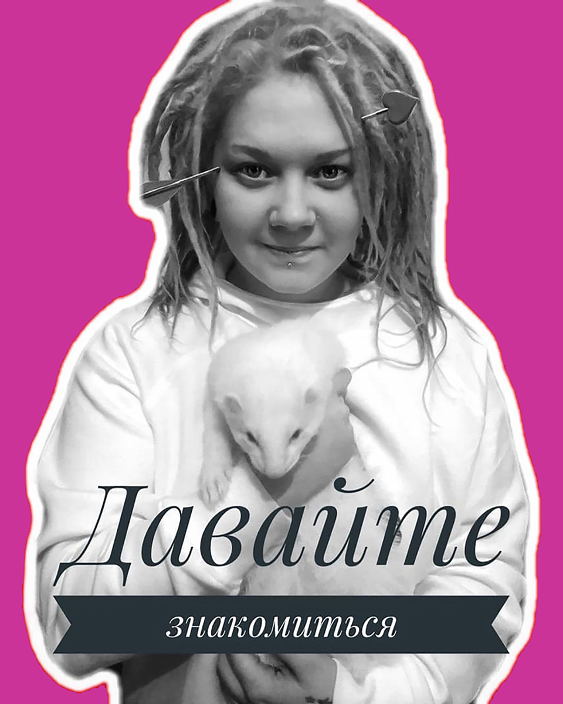

Минск · м. Восток
Афрокосички, дреды и зизи безопасным плетением
Более 10 лет создаю причёски, которые носятся месяцами и не портят волосы. Работаю с натуральными и афро-волосами, возможен выезд на дом.
- 10+
- лет опыта
- 2 000+
- довольных клиентов
- 4.9
- средняя оценка


Портфолио
Мои работы
Каждая причёска — от 4 до 12 часов работы. Плету безопасно, без натяжения кожи головы и с сохранением родных волос.

О мастере
Меня зовут Полина, я плету уже более 10 лет
Начинала с классических афрокосичек для подруг, а сегодня ко мне приезжают со всей Беларуси. Работаю только с качественным канекалоном и бережными техниками — после снятия причёски ваши волосы остаются здоровыми.
Каждую причёску подбираю индивидуально: по форме лица, типу волос и образу жизни. Если вы не знаете, что хотите, — помогу определиться на консультации.
-
Безопасное плетение
Без натяжения кожи и потери родных волос
-
Премиум-материалы
Канекалон, который не путается и держит цвет
-
Выезд на дом
По Минску и в пределах 30 км от МКАД
-
Гарантия на работу
Бесплатная коррекция в течение двух недель
Как записаться
Четыре шага до новых волос
От первого сообщения до готовой причёски — обычно не больше недели.
-
Заявка
Напишите в Instagram или Telegram. Расскажите, какую причёску хотите и когда удобно прийти.
-
Консультация
Обсудим детали: длину, цвет, тип плетения. Посчитаю точную стоимость и время работы.
-
Плетение
Приходите в студию или заказывайте выезд на дом. Работа занимает от 4 до 12 часов в зависимости от сложности.
-
Уход
Даю рекомендации по уходу и бесплатную коррекцию в первые две недели, если что-то нужно поправить.
Отзывы
Что говорят клиенты
Больше отзывов — в закреплённых сторис и в Instagram.
-
Ходила на афрокосички впервые, боялась, что будет больно. Полина всё объяснила, плела аккуратно, я почти заснула. Через месяц косички как новые, свои волосы целые.
-
Делал дреды, хотел что-то нестандартное. Полина предложила решение с тонированием — получилось именно то, что искал. Отдельное спасибо за выезд на дом.
-
Заплетала дочку на выпускной. Полина нашла подход, дочка сидела спокойно, а причёска держалась почти два месяца. Обязательно придём ещё.
Запись
Готовы к новым волосам?
Напишите — обсудим идею, подберём дату и точную стоимость. Отвечаю в течение часа в рабочее время.
- +375 (00) 000-00-00
- Минск, м. Восток · выезд на дом
- Ежедневно с 10:00 до 21:00